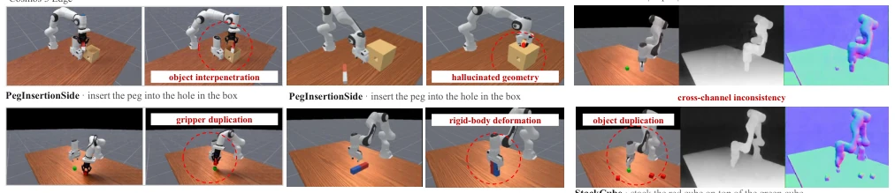
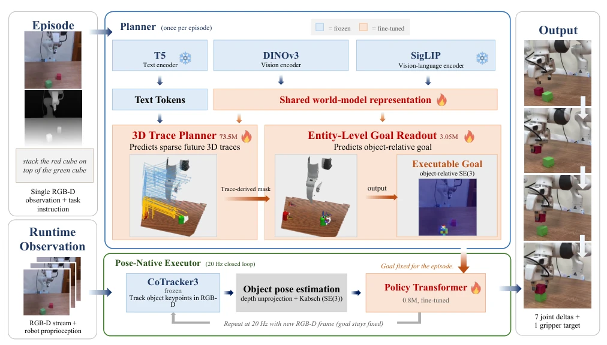
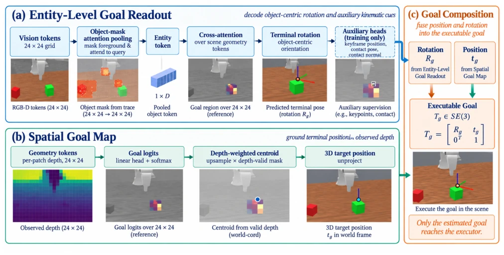
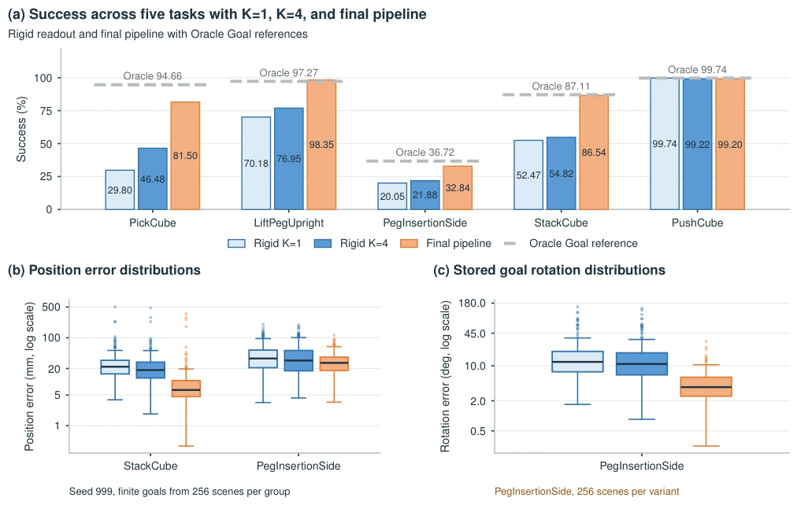
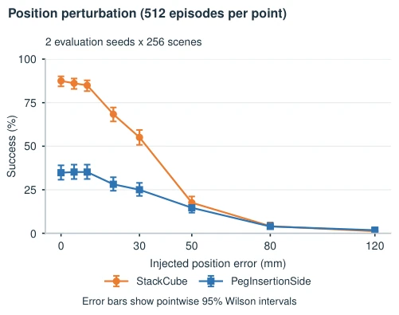
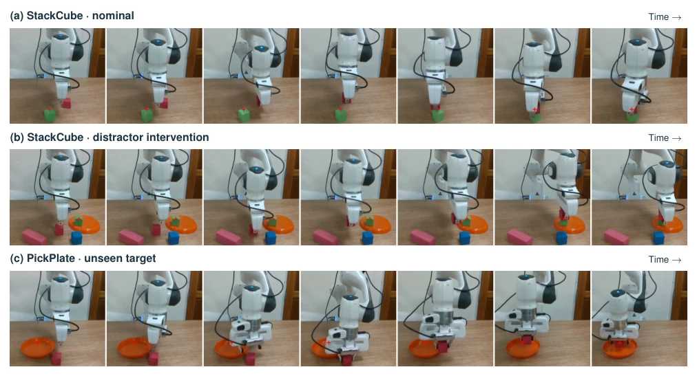
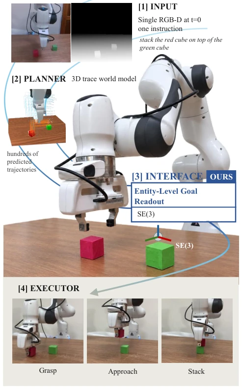

The core argument of this paper is sharp: merely predicting the future is insufficient; execution capability is also required. The authors found that while future trajectories generated by many World Models are rich, they are not convenient for directly controlling robots, because control requires compact SE(3) goals, not full-screen pixels or point clouds. They developed an "Entity-Level Goal Readout", transforming the prediction task directly into a learning objective, rather than forcing it afterwards. This approach is quite clever, decoupling planning and control. However, predicting only a single terminal pose is indeed somewhat of a shortcut; complex contact sequences and trajectory constraints are not considered, falling into the category of "capable of working but not detailed enough". Overall, this is a pragmatic improvement, transforming World Models from "spectating" to "capable of working", but in complex interaction scenarios, it may still rely on luck.
The motivation is clear: existing generative World Models (such as Dream2Flow [4], Track2Act [6]) excel at predicting scene evolution, but prediction loss convergence does not imply control goal accuracy. The traditional approach uses geometric fitting (such as Kabsch + RANSAC [11], [12]) to infer goals from predicted trajectories, but this is only post-processing, and the model training does not care whether this goal is usable. For example, futures generated by Cosmos 3 Edge [1] or TesserAct [3] may contain geometric hallucinations or object duplication, and using them directly for control will lead to failure. The authors point out that if terminal goal accuracy is not an explicit learning objective, even good geometric recovery may lead to control failure. Therefore, the "prediction to execution" interface needs to become part of the model, explicitly learning task variables required for control, rather than relying on unreliable post-processing.

Fig. 2. Qualitative motivation. Cosmos 3 Edge [1], Veo 3.1 [2], and TesserAct [3] illustrate interpenetration, hallucinated geometry, duplicated objects or grippers, deformation, and inconsistent RGB, depth, and normals. These prediction defects motivate evaluating the control goals recovered from predicted futures. The separate goal diagnostic in Table I excludes Veo 3.1.
The overall process is divided into three steps: planning, readout, and execution. First, frozen encoders (DINOv3 [18], SigLIP [19], T5 [20]) provide shared representations, and the 3D Trace Planner [7] predicts sparse future trajectories. The core innovation is Entity-Level Goal Readout, which has two branches: Entity Branch predicts object rotation using masked attention, Map Branch uses observed depth to directly locate position, and the two combine to form an SE(3) goal. This goal is fixed at the start of the episode and the World Model is not re-run. The execution end uses a Pose-Native Executor, 20Hz closed-loop, combining online pose feedback to correct errors. During training, DAgger [15] distillation is used, introducing planner error perturbation to let the policy adapt to imperfect goals. This design completely separates planning (once per episode) and control (20Hz), retaining the World Model's planning capability while ensuring control real-time performance and robustness.

Fig. 3. System overview. Frozen encoders supply a shared world-model representation for trace prediction and Entity-Level Goal Readout. The readout exposes one object-relative goal, anchored at t = 0 and fixed for the episode. Online tracking and pose estimation update object state to close the loop. The Pose-Native Executor combines pose, goal, proprioception, and previous action to produce an eight-dimensional arm and gripper command at 20 Hz.

Fig. 4. Entity-Level Goal Readout. (a) Masked pooling and cross attention produce terminal rotation, with dashed paths for training-only auxiliary supervision. (b) The map branch grounds position in valid observed depth. (c) Goal composition combines rotation and position into the executable goal. Image panels illustrate intermediate representations.
Experiments were conducted on 5 tasks in ManiSkill3, comparing Rigid Readout and other World Models (such as Structured-4D [10]). Metrics include terminal goal position error and closed-loop success rate. Results show that Entity-Level Goal Readout significantly outperforms rigid fitting in goal accuracy (e.g., StackCube error reduced by 49.6%), with an average success rate of 79.69%, nearly 20 percentage points higher than Rigid Readout. Ablation experiments prove that depth information is crucial for localization. Control perturbation tests show that the actuator is sensitive to position error. Finally, real deployment on a Franka robotic arm, StackCube success rate 73.33%, PickPlate 75.00%, proving zero-shot transfer capability. However, the PushCube task is near saturation, with limited room for improvement.

Fig. 5. Task success and goal error distributions. (a) Light blue, blue, and orange denote rigid K = 1, rigid K = 4, and the final pipeline. Gray segments show empirical Oracle Goal references. (b,c) Seed 999 box plots show the median and interquartile range (IQR), 1.5 IQR whiskers, and all outliers on logarithmic axes. Groups have 256 finite records except StackCube rigid positions (252/256). (c) Raw quaternion errors are shown for PegInsertionSide. Comparison conditions are in Sec. IV-B.

Fig. 7. Execution sensitivity to goal position. The Oracle Goal is translated with the planner bypassed. Each point pools 256 scenes at seeds 999 and 997 (512 episodes), with scenes and directions paired across magnitudes. Markers show measured success, error bars show pointwise 95% Wilson intervals, and lines guide the eye. PegInsertionSide uses 10 mm clearance.

Fig. 8. Real robot deployment. Rollouts show (a) nominal StackCube, (b) StackCube with distractors, and (c) PickPlate, where the cube is placed in the orange plate. PickPlate is unseen during policy training. Frames progress from left to right.
其他图片Other Figures

Fig. 1. From prediction to an executable goal. A single RGB-D observation and task instruction condition a 3D trace world model. The Entity-Level Goal Readout converts the resulting world-model representation into a compact object-relative goal in SE(3) for the Pose-Native Executor. The StackCube example illustrates the prediction-to-execution interface from a rich predicted future to closed-loop manipulation.